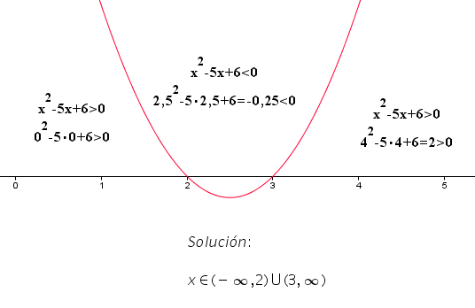
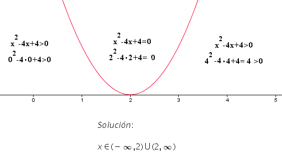
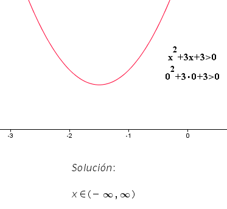

Tal y como ocurre con las ecuaciones, podemos hablar también de inecuaciones de grado superior a 1. En este apartado nos centramos en las de grado 2.
Inecuaciones cuadráticas
Son aquellas que adoptan alguna de las siguientes formas:\[ax^2+bx+c>0\]\[ax^2+bx+c<0\]\[ax^2+bx+c\geq 0\]\[ax^2+bx+c \leq 0\]siendo \(a\), \(b\) y \(c\) números reales cualesquiera y \( a \neq 0\).
Resolución de una ecuación cuadrática.
Su solución puede obtenerse considerando la función \(y=ax^2+bx+c\) y buscando sus puntos de corte con el eje \(\overrightarrow{\mathrm{OX}}\), es decir, resolviendo la ecuación \(ax^2+bx+c=0\). Se pueden presentar los siguientes casos:
CASO I
La ecuación \(\pmb{ax^2+bx+c=0}\) admite dos raíces reales distintas \(\pmb{x_1}\) y \(\pmb{x_2}\).
En este caso, la solución viene dada por el signo que adopta la función a la derecha y a la izquierda de los valores \(x_1\) y \(x_2\).
Ejemplo:
Resolver la inecuación \(x^2-5x+6>0\).
Resolvemos la ecuación \(x^2-5x+6=0\) y obtenemos como soluciones \(x_1=2\) y \(x_2=3\). El procedimiento de resolución de la inecuación se puede ver en la siguiente imagen.
 |
Comprobamos el signo de la función \(y=x^2-5x+6\) , cuya representación gráfica es una parábola (en rojo en la imagen de arriba), a derecha e izquierda de los valores \(2\) y \(3\).
Tomamos un valor cualquiera que se encuentre a la izquierda de \(2\) (o sea, que sea menor que \(2\)), por ejemplo, \(x = 0\). Si sustituimos \(x\) por este valor en la función \(y=x^2-5x+6\) , obtenemos \(y = 6\). Al ser \(6 > 0\), eso quiere decir que todos los valores menores de \(2\) van formar parte del conjunto de soluciones de nuestra inecuación. De esta forma, ya tenemos un primer conjunto de soluciones que vienen representados por el intervalo \((-\infty,2)\) .
Comprobamos ahora los valores a la derecha de \(2\) (o sea, mayores que \(2\)) que, a su vez, se encuentren a la izquierda de \(3\) (o sea, menores que \(3\)). Para ello, elegimos un valor que cumpla esta condición, por ejemplo, \(x = 2'5\) y lo sustituimos en nuestra función, obteniendo \(y = -0'25\). Al ser \(-0'25 < 0\), eso quiere decir que todos los valores que se encuentran entre \(2\) y \(3\) no van a ser solución de nuestra inecuación. De esta forma, los valores del intervalo \((2, 3)\) no forman parte de la solución de la inecuación.
Finalmente, comprobamos qué ocurre con los valores a la derecha de \(3\) (o sea, mayores que \(3\)). Elegido un valor que cumpla esta condición (por ejemplo, \(x = 4\)), y sustituido en nuestra función, obtenemos \(y = 2\). Dado que \(2 > 0\), podemos decir que todos los valores mayores que \(3\) van a formar parte del conjunto de soluciones de nuestra inecuación. De esta forma, podemos concluir que el intervalo \((3,+\infty)\) forma parte de la solución de la inecuación.
La solución final de la inecuación será el conjunto de valores de \(x\) que pertenece a la unión de los intervalos hallados más arriba y viene representada de la forma \(x \in(-\infty,2)\cup (3,+\infty)\) .
CASO II
La ecuación \(\pmb{ax^2+bx+c=0}\) tiene dos raíces reales coincidentes, es decir, \(\pmb{x_1=x_2}\).
En este caso, la solución viene dada por el signo que adopta la función a la derecha y a la izquierda de esa solución.
Ejemplo:
Resolver la inecuación \(x^2-4x+4>0\) .
Resolvemos la ecuación \(x^2-4x+4=0\) y obtenemos como solución \(x_1=x_2=2\) . El procedimiento de resolución de la inecuación se puede ver en la siguiente imagen.
 |
Podemos apreciar que la inecuación \(x^2-4x+4>0\) se cumple para cualquier valor de \(x\), excepto para la raíz \(x = 2\) (pues, para ella, el valor de la inecuación es \(0\)). De ahí que la solución de la misma sea: \(x\in (-\infty,2)\cup (2,+\infty) \), o bien, \(x \in \mathbb{R}-\left\{ 2 \right\} \).
CASO III
La ecuación \(\pmb{ax^2+bx+c=0}\) no tiene raíces reales.
En este caso la solución viene dada por el signo que adopta la función para cualquier valor.
Ejemplo:
Resolver la inecuación \(x^2+3x+3>0\).
Resolvemos la ecuación \(x^2+3x+3=0\) y vemos que no tiene solución. El procedimiento de resolución de la inecuación se puede ver en la siguiente imagen.
 |
La representación gráfica de la función \(y=x^2+3x+3\) se encuentra por encima del eje \(\overrightarrow{\mathrm{OX}}\), lo cual indica que adopta valores positivos (mayores que \(0\)) sea cual sea el valor de \(x\). Por tanto, la solución de la inecuación es \(x \in (-\infty, +\infty) \) , o bien, \( x \in \mathbb{R}\).
En cambio, la inecuación \(x^2+3x+3\leq 0\) carece de solución.
Si todavía te queda alguna duda, puedes visualizar el siguiente vídeo: 
Comprueba lo aprendido
Marca en cada caso la opción que creas correcta:
Ejercicios.
Resuelve las siguientes inecuaciones cuadráticas.
Cada respuesta correcta suma 2 puntos y resta 1 punto si es incorrecta.
Comprueba lo aprendido
Escena de José Luis Alonso Borrego en Proyecto Descartes. Licencia CC